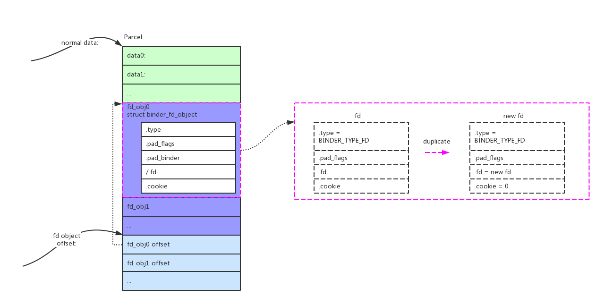
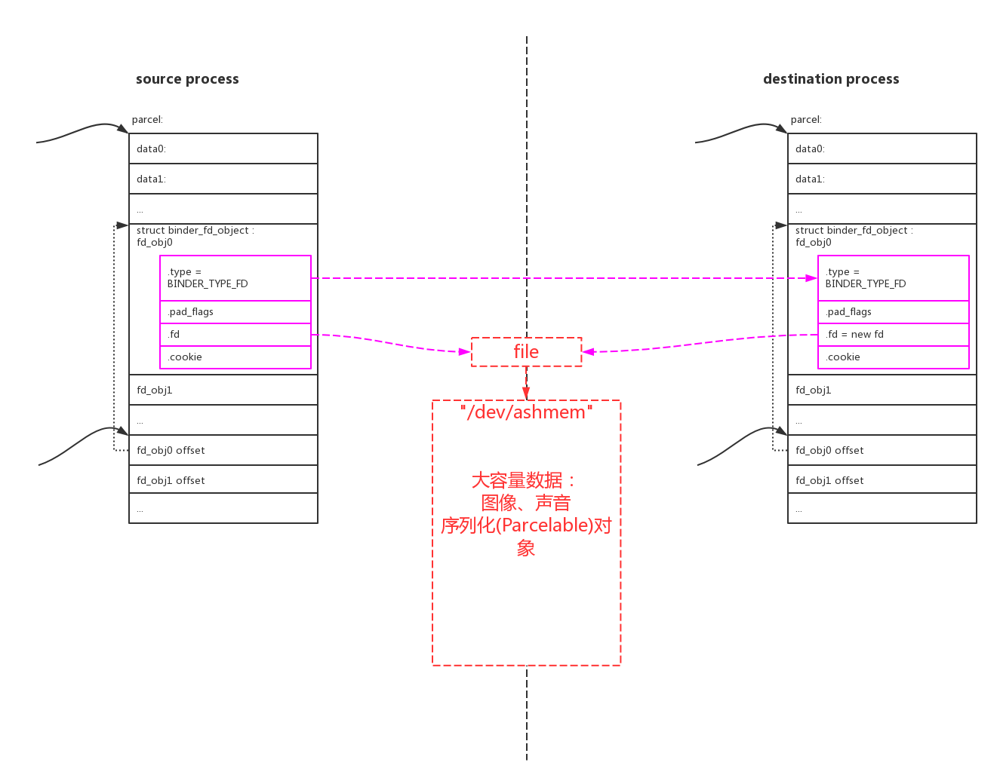
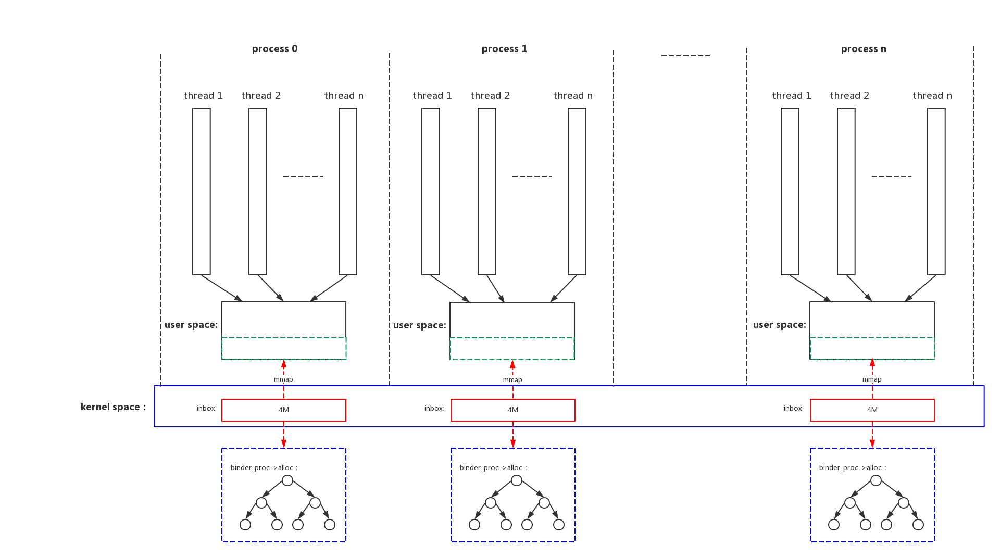
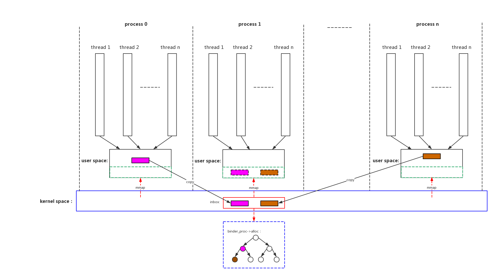
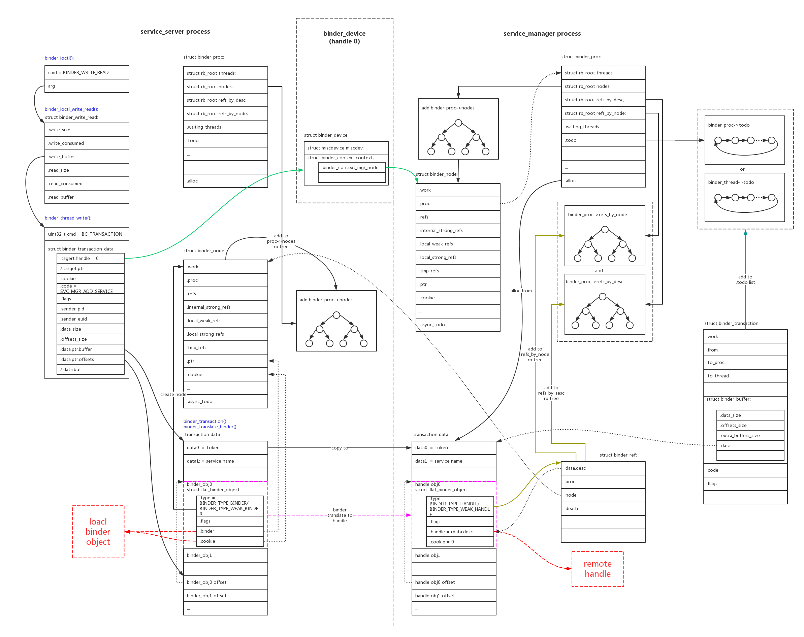
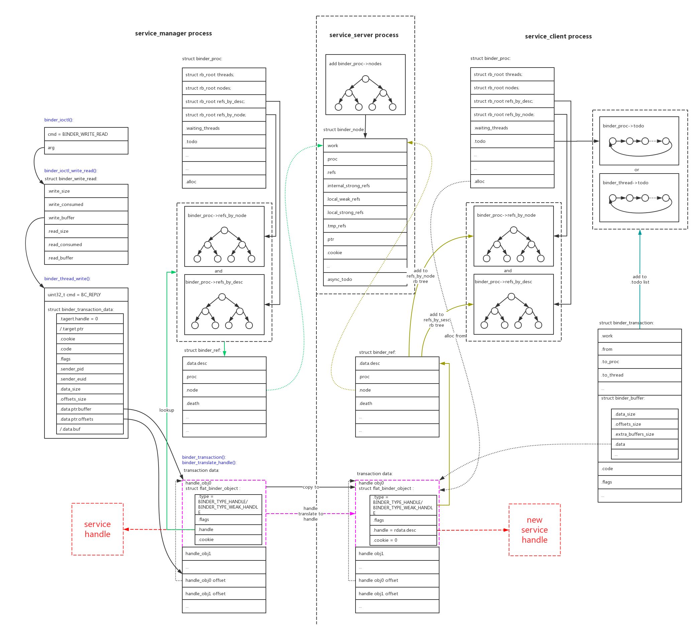
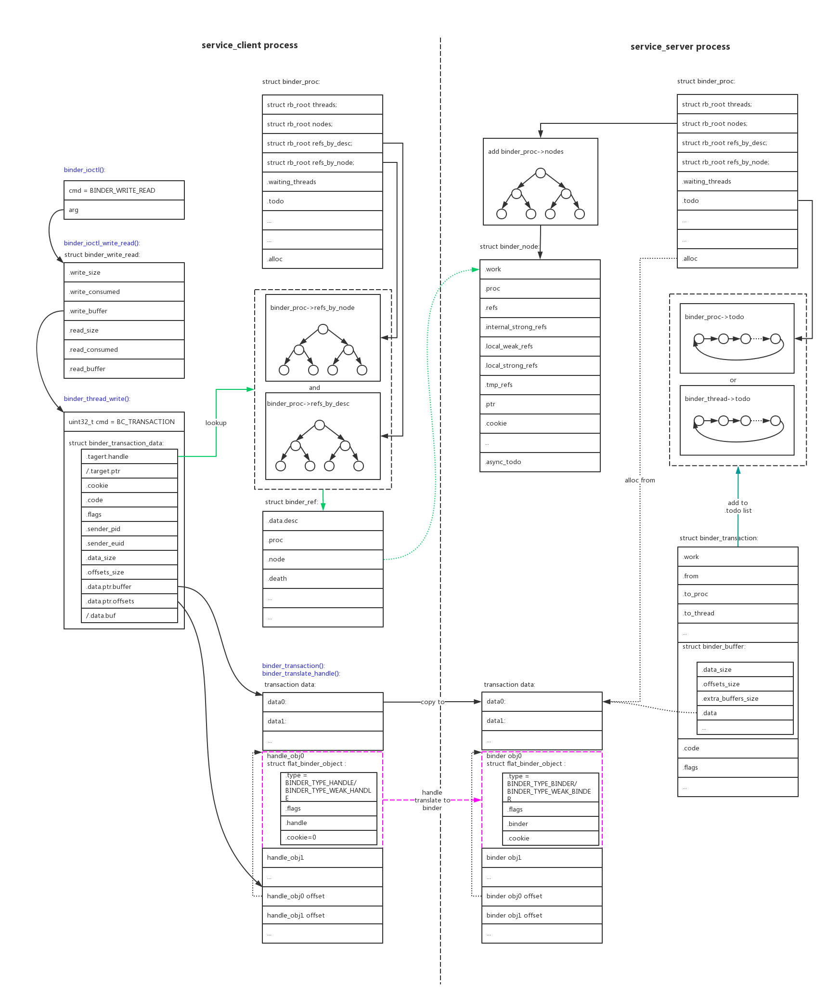
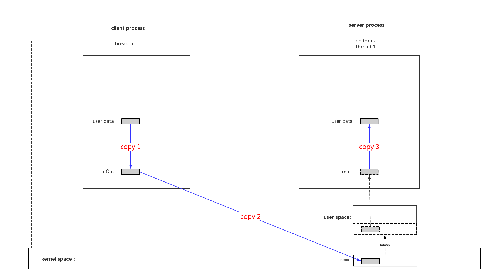
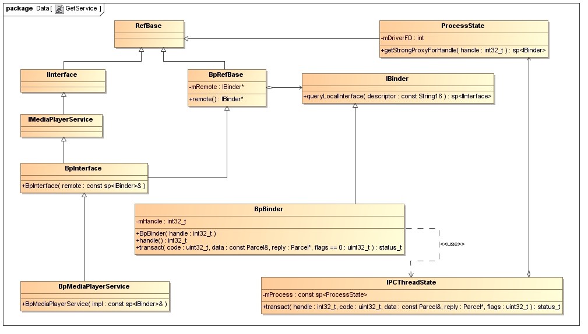

1、binder原理 纵观现有市面上所有讲binder的文章，都存在一个最大的问题：没有讲清楚binder对象是什么？
我们首先回到binder的目的，就是IPC(Inter-Process Communication)进程间通讯。那么怎么样实现进程间通讯呢？要素有三个：
binder通讯的本质实际上非常简单，就是client、server双方在共享内存的基础上封装成自定义api函数，并无神奇之处。我们看看他是怎么和IPC三要素对应上的：
1.1、IPC函数指针 binder的service_server可以向service_client提供service服务，但反过来不行。所以binder service其实是单向的，只有service_server端才能提供service函数，且函数只能在service_server端运行。
大部分情况下：service_server端提供的一组IPC服务本地函数 ，就是binder对象 。
例如，mediaserver注册的一系列service中的一个”media.player”：
1 2 3 4 5 6 7 8 9 10 11 12 /frameworks/ av/media/ mediaserver/main_mediaserver.cpp: int main(int argc __unused, char **argv __unused){ MediaPlayerService: :instantiate();} ↓ /frameworks/ av/media/ libmediaplayerservice/MediaPlayerService.cpp: void MediaPlayerService: :instantiate() { defaultServiceManager()->addService( String16("media.player" ), new MediaPlayerService()); }
service_server提供了一组可以在server本地运行的函数，即binder对象 。如下：
1 2 3 4 5 6 7 8 9 10 11 12 13 14 15 16 17 18 19 20 21 22 23 24 25 /frameworks/av/media/libmedia/IMediaPlayerService .cpp: status_t BnMediaPlayerService ::onTransact( uint32_t code, const Parcel & data , Parcel * reply, uint32_t flags) { switch (code) { case CREATE : { CHECK_INTERFACE (IMediaPlayerService , data , reply); sp<IMediaPlayerClient > client = interface_cast<IMediaPlayerClient >(data .readStrongBinder()); audio_session_t audioSessionId = (audio_session_t) data .readInt32(); sp<IMediaPlayer > player = create(client, audioSessionId); reply->writeStrongBinder(IInterface ::asBinder(player)); return NO_ERROR ; } break; case CREATE_MEDIA_RECORDER : { CHECK_INTERFACE (IMediaPlayerService , data , reply); const String16 opPackageName = data .readString16(); sp<IMediaRecorder > recorder = createMediaRecorder(opPackageName); reply->writeStrongBinder(IInterface ::asBinder(recorder)); return NO_ERROR ; } break; ... } }
在service_client端可以通过handle 来引用这个binder对象 ，还封装了一系列与之对应的函数来组织数据。但是这些函数实际上是通讯用的，函数的实际功能并不能在client本地执行：
1 2 3 4 5 6 7 8 9 10 11 12 13 14 15 16 17 18 19 20 21 22 23 24 25 26 27 /frameworks/av/media/libmedia/IMediaPlayerService .cpp: class BpMediaPlayerService : public BpInterface <IMediaPlayerService >{ public: virtual sp<IMediaPlayer > create( const sp <IMediaPlayerClient >& client , audio_session_t audioSessionId ) { Parcel data, reply; data.writeInterfaceToken(IMediaPlayerService ::getInterfaceDescriptor ()); data.writeStrongBinder(IInterface ::asBinder (client )); data.writeInt32(audioSessionId ); remote()->transact(CREATE , data , &reply ); return interface_cast<IMediaPlayer >(reply .readStrongBinder ()); } virtual sp<IMediaRecorder > createMediaRecorder(const String16 &opPackageName ) { Parcel data, reply; data.writeInterfaceToken(IMediaPlayerService ::getInterfaceDescriptor ()); data.writeString16(opPackageName ); remote()->transact(CREATE_MEDIA_RECORDER , data , &reply ); return interface_cast<IMediaRecorder >(reply .readStrongBinder ()); } ... };
所以理解binder对象 和handle 是非常关键的。service_server端需要在本地执行函数，所以执行时函数调用的3要素(函数、参数、返回值)都必须是本地的，所以它必须拥有一组函数的binder对象 ；service_client端不需要在本地执行，所以它没有函数集的binder对象 ，它只有函数集的远端引用handle 。
binder通讯的3个主角：service_mannager、service_server、service_client。在各种场景下，分别的binder对象 和handle 关系如下：
binder object_handle
场景
client
server
service_manage初始化
service_manager:
binder device：
service_server的addService
service_server:
service_manager：
service_client的get_service
service_client:
service_manage：
service_client调用service
service_client:
service_server：
衍生出的原则如下：
service_server类的进程只有binder对象 ，没有handle (除了handle0)，因为它所有操作都必须本地执行，引用远程对象毫无意义；
service_client类的进程只有handle ，没有binder对象 ，因为它需要远程执行service不需要本地执行；
service_mannager进程同时有binder对象 和handle ，它本地binder对象 的作用就是操作所有其他进程的handle ；
1.2、IPC函数参数 如上一节描述，service_client可以通过名字向service_manage查询得到handle。这个handle就相当于远程的函数集指针。
binder使用parcel方式来打包函数参数和返回值。parcel可以用来传递几种类型的数据：
普通类型的少量数据；
binder对象/handle(struct flat_binder_object);
fd(struct binder_fd_object)；
下面详细描述每种情况的parcel包格式和承载的内容。
这种普通类型(int/long/string…)的少量数据存储最为简单，存入时按照一定的顺序存入，取出时按照数据的排列格式取出即可。
2、binder对象 /handle (struct flat_binder_object)：
这一类型数据的parcel包格式如下：
可以看到这种类型的parcel包中包含了两种数据：data0/data1/…是普通类型数据；binder_obj0/binder_obj1/…是binder对象，binder_obj0 offset/binder_obj1 offset/…指出了了binder对象在parcel包中的偏移；
binder对象和handle共用结构体struct flat_binder_object。
上一节说过binder对象 其实就是一组函数的指针，但是一个指针只需要一个long类型就可以标识了，为什么还需要用一个结构体struct flat_binder_object来传递。我理解下来主要的思想如下：使用binder都是面向对象语言c++/java，它们把函数组也要实例化成一个对象，一个对象只有被引用时才不会被回收，远程引用也需要让本地引用加1。
一组service函数，对本地进程来说就是binder，对其他需要使用的进程来说需要远程引用，就是handle，是一对多的关系。关系图如下：
binder object是service_server的一个“local binder object”，service_manager和service_client创建了多个远程引用“remote handle”。
这个其实就是binder的核心思想，binder花费了大量的代码在维护这个关系上面：
[x] service_server进程在驱动中创建了binder_node节点来保存binder对象 ，把本进程所有的binder_node都挂载在一颗红黑树proc->nodes上；
[x] service_manager和service_client每个新进程对这个binder对象 引用，就创建一个新的binder_ref，它的值就是handle ，并回指向binder_node。并且把本进程对其他service_server的引用都挂载到两颗红黑树proc->refs_by_node/proc->refs_by_desc上。并且远程引用会增加service_server进程关于binder对象 的引用计数；
binder驱动负责建立起binder对象 和handle 之间的映射关系，创建上述的数据结构，并负责翻译：
parcel还能传输文件句柄fd，此时的包格式如下：

传输fd的意义何在呢？当binder的两个进程间需要传输大量的数据。例如：图像声音数据、或者是一个对象。可以在匿名共享内存(Ashmem)中创建一块区域，源进程会得到一个相应的fd，再把这个fd使用binder传递给目的进程，就可以共享数据了。
需要特别说明的是对象的传递，在同一个进程内进行函数调用的话，参数对象通常是使用引用的方式传递的。但是如果是跨进程的调用，是没有办法引用的，只有把整个对象复制过去。这种操作叫做对象的序列化，java称为Serializable，android有优化的实现Parcelable。注意对象序列化的Parcelable和binder的parcel数据封装不是一回事，尽管他们原理上很相似。binder并没有提供对象Parcelable的接口，如果我们要跨进程传输对象，只能把对象序列化(Parcelable)到匿名共享内存中，再把对应fd通过binder传输给目的进程。

binder驱动在检测到传输的是fd，会在新的进程中分配一个新的fd，并指向原来的file结构，这样fd就被跨进程duplicate了。两个进程使用各自的fd对匿名共享内存区域进行mmap映射，就能访问相同的内存区域了。
1.3、IPC函数返回值 函数返回值也是使用和函数参数一样的parcel结构来封装数据的。就不再重复叙述。
上面提到的原则需要再次强调，在一次service_client和service_server之间的通讯，在传递参数和返回值时都要遵循的准则：service_client只会有handle ，service_server只会有binder对象 。
1.4、binder内存 前面说过binder通讯的本质就是在共享内存上加上一层api，我们来看看他是怎么管理共享内存的。

我们可以看到：
binder驱动给每个进程分配最多4M的buffer空间，这段空间在内核通过binder_proc->alloc红黑树来管理，同时通过mmap映射到进程用户空间；
和所有的进程通讯机制类似，这段空间相当于进程的接收邮箱inbox，其他进程发过来的消息会从其他进程用户空间复制存放到这里；
因为是mmap的所有本进程的用户空间访问免除了一次拷贝；
另外因为进程支持多个线程，所以多个线程会共享本进程的binder buffer；

我们看一下process 0、process n进程和process 1进程进行binder通讯时的buffer使用情况：
首先会在process 1进程的inbox(binder buffer)空间中分配buffer；
binder驱动把process 0、process n进程用户空间的消息拷贝到process 1进程的inbox内核buffer中；
因为mmap，process 1进程的用户空间也可以看见这些消息了；
2、binder驱动 驱动是整个binder通讯的核心，java和native都是对其的封装。
2.1、service_manager的初始化
通过上图我们可以看到具体过程：
1、binder驱动为service_manager进程创建一个新的binder_node结构，赋值：.ptr=0、.cookie=0、.proc=当前proc；
2、把这个binder_node新节点加入到当前进程的proc->nodes红黑树中；
3、把binder_device的全局handle 0指针binder_device->context.binder_context_mgr_node指向新创建的binder_node；这样其他人通过handle 0指针就能找到对应binder_node，进一步找到service_manager是哪一个进程；
service_manager代码在service_manager.c 、binder.c ，可以具体查看。初始化过程为：
1 main () -> binder_open ()、binder_become_context_manager ()
2.2、service_server的addService 
通过上图我们可以看到，在service_server向service_manager注册service的时候，在驱动中的具体流程如下：
1、因为是向service_manager注册，所以target handle固定=0。通过binder_device->context找到handle 0对应的binder_node，也就找到了对应的binder_proc，找到了对应的service_manager进程；
2、在service_manager进程中分配binder buffer，把service_server传递过来的parcel数据全部复制进去；
3、翻译parcel数据中的binder对象，把binder翻译成handle；
4、可以看到service_manager进程的handle就是对service_server进程binder的一个引用。把handle加入到service_manager进程的handle缓存红黑树中；
5、把翻译后的parcel数据和其他信息打包成binder_transaction结构，并挂载到service_manager进程的proc->todo/thread->todo链表中，等待service_manager进程的读取；
service_manager的读取响应和reply动作就不去具体分析了，因为都非常的清晰。service_manager代码在service_manager.c 、binder.c ，可以具体查看。service_manager在svcmgr_handler()函数中响应service_server的SVC_MGR_ADD_SERVICE请求，最终调用do_add_service()把handle和对应的service name加到svclist链表中：
1 main() ->() ->() ->() ->
2.3、service_client的get service
如上图service_client向service_manager发送get service请求的数据比较简单：
1、根据handle 0找到service_manager进程；
2、在service_manager进程中分配binder buffer，把service_client传递过来的parcel数据全部复制进去；
3、parcel的内容中没有binder或者handle，不需要翻译；
4、把parcel数据和其他信息打包成binder_transaction结构，并挂载到proc->todo/thread->todo链表中，等待service_manager进程的读取；

上图是service_manager给service_client回复信息的过程：
1、service_manager根据service name在本地svclist链表中找到对应的handle，它把handle打包进parcel并reply给service_client；
2、根据service_manager所在线程thread->transaction_stack字段中保存的binder_transaction结构，从.from字段可以找到service_client所在的线程(binder_thread)和进程(binder_proc)；
3、在service_client进程中分配binder buffer，把service_manager传递过来的parcel数据全部复制进去；
4、翻译parcel中打包的handle结构，判断handle指向的binder_node进程不是service_client进程，所以新建service_client进程中对binder_node新的引用。新创建handle并加入到service_client进程的handle缓存红黑树中；
5、这样service_client就从service_manager中获取到了service_server binder对应的引用handle；
6、把翻译后的parcel数据和其他信息打包成binder_transaction结构，并挂载到service_client进程的proc->todo/thread->todo链表中，等待service_client进程读取reply；
2.4、service_client调用service 
上图是service_client调用service_server的service的过程：
1、service_client的target handle为上一步向service_manager查询得到的handle，根据handle能找到对应binder_node，进一步找到service_server所在进程；
2、在service_server进程中分配binder buffer，把service_client传递过来的parcel数据全部复制进去；
3、parcel中打包了函数参数，如果包含handle对象，需要进行翻译；不可能包含binder对象，因为service_client进程的binder对象在service_server进程中无法运行；
4、如果parcel中包含的handle指向的binder_noe和service_server是同一进程，把它翻译成本地binder，在本地可以运行；
5、如果parcel中包含的handle指向的binder_noe和service_server不是同一进程，那只能在service_server进程中给它创建一份新的引用handle。这个handle也不能在service_server进程中运行，只能向其他service_server请求服务；
6、把翻译后的parcel数据和其他信息打包成binder_transaction结构，并挂载到service_client进程的proc->todo/thread->todo链表中，等待service_client进程读取reply；
2.5、Scatter-gather模式 在Android O中binder增加了一种性能改进模式Scatter-gather，这是因为binder在传输IPC参数数据时，因为传输的量不大，binder实际上做了3次拷贝：

Scatter-gather把3次copy优化成1次：
具体的代码可以看驱动对BINDER_TYPE_PTR类型数据的处理：
1 2 3 4 5 6 7 8 9 10 11 12 13 14 15 16 17 18 19 20 21 22 23 24 25 26 27 28 29 30 31 32 33 34 35 36 37 38 39 40 41 42 case BINDER_TYPE_PTR: { struct binder_buffer_object *bp = to_binder_buffer_object(hdr); size_t buf_left = sg_buf_end - sg_bufp; if (bp->length > buf_left) { binder_user_error("%d:%d got transaction with too large buffer\n" , proc ->pid, thread->pid); return_error = BR_FAILED_REPLY; return_error_param = -EINVAL; return_error_line = __LINE__; goto err_bad_offset; } if (copy_from_user(sg_bufp, (const void __user *)(uintptr_t) bp->buffer, bp->length)) { binder_user_error("%d:%d got transaction with invalid offsets ptr\n" , proc ->pid, thread->pid); return_error_param = -EFAULT; return_error = BR_FAILED_REPLY; return_error_line = __LINE__; goto err_copy_data_failed; } /* Fixup buffer pointer to target proc address space */ bp->buffer = (uintptr_t)sg_bufp + binder_alloc_get_user_buffer_offset( sg_bufp += ALIGN(bp->length, sizeof(u64)); ret = binder_fixup_parent(t, thread, bp, off_start, offp - off_start, last_fixup_obj, last_fixup_min_off); return_error = BR_FAILED_REPLY; return_error_param = ret; return_error_line = __LINE__; goto err_translate_failed; } last_fixup_obj = bp; last_fixup_min_off = 0 ; } break ;
2.6、多个binder context Android O以后创建了3个misc设备，对应3个domain(contexts)，相互独立：
1 2 /dev/ binder /dev/ hwbinder /dev/ vndbinder
因为在Android O以后HIDL也启用了binder通信，使用binder通信的进程越来越多，为了便于管理并且相互隔离，Android把binder划分成了3个domain(contexts)：
IPC Domain
Description
/dev/binder
IPC between framework/app processes with AIDL interfaces
/dev/hwbinder
IPC between framework/vendor processes with HIDL interfacesIPC between vendor processes with HIDL interfaces
/dev/vndbinder
IPC between vendor/vendor processes with AIDL Interfaces
2.7、调试接口 binder驱动创建了很多调试接口，可以方便的debug binder通讯的过程。
1、”/d/binder/state”
全局情况：
1 2 3 4 5 6 7 8 9 10 11 12 13 14 15 16 17 # more /d/binder/state binder state: dead nodes: node 392820 : u0000007b50bf75a0 c0000007b2b4d5b80 pri 0 :139 hs 1 hw 1 ls 0 lw 0 is 1 iw 1 tr 1 proc 3021 node 176573 : u0000007b50bf72c0 c0000007b4515a600 pri 0 :139 hs 1 hw 1 ls 0 lw 0 is 1 iw 1 tr 1 proc 5571 node 56178 : u0000007b50a8dfa0 c0000007b50bc31c0 pri 0 :139 hs 1 hw 1 ls 0 lw 0 is 1 iw 1 tr 1 proc 3135 node 47334 : u0000007b47f0df40 c0000007b47f077c0 pri 0 :139 hs 1 hw 1 ls 0 lw 0 is 1 iw 1 tr 1 proc 1458 node 342153 : u0000007b47f0d480 c0000007b451bf8c0 pri 0 :139 hs 1 hw 1 ls 0 lw 0 is 1 iw 1 tr 1 proc 5571 node 50574 : u0000007b451ffa20 c0000007b3519e5c0 pri 0 :139 hs 1 hw 1 ls 0 lw 0 is 1 iw 1 tr 1 proc 1458 node 49594 : u0000007b451ff940 c0000007b3507f480 pri 0 :139 hs 1 hw 1 ls 0 lw 0 is 1 iw 1 tr 1 proc 2859
2、”/d/binder/stats”
全局统计：
1 2 3 4 5 6 7 8 9 10 11 12 13 14 15 16 17 18 19 20 21 22 23 24 25 26 27 28 29 30 31 32 33 34 35 36 37 38 39 40 41 42 binder stats: BC_TRANSACTION: 226132 BC_REPLY: 201918 BC_FREE_BUFFER: 633493 BC_INCREFS: 9234 BC_ACQUIRE: 9415 BC_RELEASE: 6040 BC_DECREFS: 6014 BC_INCREFS_DONE: 5551 BC_ACQUIRE_DONE: 5552 BC_REGISTER_LOOPER: 355 BC_ENTER_LOOPER: 229 BC_REQUEST_DEATH_NOTIFICATION: 2908 BC_CLEAR_DEATH_NOTIFICATION: 2146 BC_DEAD_BINDER_DONE: 225 BC_TRANSACTION_SG: 118790 BC_REPLY_SG: 86885 BR_TRANSACTION: 344921 BR_REPLY: 288803 BR_TRANSACTION_COMPLETE: 633725 BR_INCREFS: 5559 BR_ACQUIRE: 5560 BR_RELEASE: 3436 BR_DECREFS: 3435 BR_SPAWN_LOOPER: 357 BR_DEAD_BINDER: 226 BR_CLEAR_DEATH_NOTIFICATION_DONE: 2146 proc: active 163 total 232 thread: active 852 total 3214 node: active 1610 total 5564 ref: active 2557 total 9384 death: active 746 total 2908 transaction: active 1 total 633725 transaction_complete: active 0 total 633725 proc 10578 context binder threads: 18 requested threads: 0 +2/15 ready threads 3 free async space 520192 nodes: 41
3、”/d/binder/proc/xxx”
具体进程的情况：
1 2 3 4 5 6 7 8 9 10 11 12 13 # cat /d/binder/proc/1037 binder proc state: proc 1037 context binder thread 1037 : l 12 need_return 0 tr 0 thread 1094 : l 00 need_return 0 tr 0 thread 1096 : l 12 need_return 0 tr 0 node 2758 : u0000006fe9c10000 c0000006fe9c0d008 pri 0 :139 hs 1 hw 1 ls 0 lw 0 is 1 iw 1 tr 1 proc 704 node 1192 : u0000006fea02f620 c0000006fea029868 pri 0 :139 hs 1 hw 1 ls 0 lw 0 is 1 iw 1 tr 1 proc 549 ref 1190 : desc 0 node 2 s 1 w 1 d 0000000000000000 ref 1204 : desc 1 node 170 s 1 w 1 d 0000000000000000 ref 249105 : desc 2 node 5946 s 1 w 1 d 0000000000000000 buffer 249107 : 0000000000000000 size 3600 :0 :0 delivered
3、service manager实现 service_manager逻辑很清晰，代码也不多，主要流程在上节中已经描述就不再详细分析。service_manager.c 、binder.c
4、native实现 整个native层binder的实现还是以mediaserver为例来说明。
4.1、process/thread
上图已经把native层binder通讯最重要的部分都画出来了，理解了这张图native的实现基本理解了大半：
因为binder buffer是一个进程一份的，所以不论是client还是server进程，都只会创建一个binder fd，进行一次mmap映射。binder fd、mmap公共资源在本进程内的多个线程间共享。native使用了一个ProcessState类来管理这些进程公共资源。
1 sp<ProcessState> proc(ProcessState ::self ())
↓
1 2 3 4 5 6 7 8 9 10 11 12 13 14 15 16 17 18 19 20 21 22 23 24 25 26 27 28 29 30 31 32 33 34 35 36 37 38 39 40 41 42 43 44 45 46 47 48 49 50 51 52 53 54 55 56 57 58 59 60 61 62 63 64 65 66 67 68 69 70 71 sp<ProcessState> ProcessState::self () Mutex::Autolock _l(gProcessMutex); if (gProcess != NULL ) { return gProcess; } gProcess = new ProcessState("/dev/binder" ); return gProcess; } ↓ ProcessState::ProcessState(const char *driver) : mDriverName(String8(driver)) , mDriverFD(open_driver(driver)) , mVMStart(MAP_FAILED) , mThreadCountLock(PTHREAD_MUTEX_INITIALIZER) , mThreadCountDecrement(PTHREAD_COND_INITIALIZER) , mExecutingThreadsCount(0 ) , mMaxThreads(DEFAULT_MAX_BINDER_THREADS) , mStarvationStartTimeMs(0 ) , mManagesContexts(false ) , mBinderContextCheckFunc(NULL ) , mBinderContextUserData(NULL ) , mThreadPoolStarted(false ) , mThreadPoolSeq(1 ) { if (mDriverFD >= 0 ) { mVMStart = mmap(0 , BINDER_VM_SIZE, PROT_READ, MAP_PRIVATE | MAP_NORESERVE, mDriverFD, 0 ); if (mVMStart == MAP_FAILED) { ALOGE("Using /dev/binder failed: unable to mmap transaction memory.\n" ); close (mDriverFD); mDriverFD = -1 ; mDriverName.clear (); } } LOG_ALWAYS_FATAL_IF(mDriverFD < 0 , "Binder driver could not be opened. Terminating." ); } ↓ static int open_driver (const char *driver) int fd = open (driver, O_RDWR | O_CLOEXEC); if (fd >= 0 ) { int vers = 0 ; status_t result = ioctl(fd, BINDER_VERSION, &vers); if (result == -1 ) { ALOGE("Binder ioctl to obtain version failed: %s" , strerror(errno)); close (fd); fd = -1 ; } if (result != 0 || vers != BINDER_CURRENT_PROTOCOL_VERSION) { ALOGE("Binder driver protocol(%d) does not match user space protocol(%d)! ioctl() return value: %d" , vers, BINDER_CURRENT_PROTOCOL_VERSION, result); close (fd); fd = -1 ; } size_t maxThreads = DEFAULT_MAX_BINDER_THREADS; result = ioctl(fd, BINDER_SET_MAX_THREADS, &maxThreads); if (result == -1 ) { ALOGE("Binder ioctl to set max threads failed: %s" , strerror(errno)); } } else { ALOGW("Opening '%s' failed: %s\n" , driver, strerror(errno)); } return fd; }
native binder对线程也进行了封装。
2.1、对于server端来说，native binder创建一个线程池，可以多个接收线程来响应和运行service服务。例如
1 2 3 4 5 6 7 8 # ps -eT | grep Binder mediaex 1028 1180 1 2179292 15664 binder_thread_read 0 S Binder:1028 _1 mediaex 1028 1886 1 2179292 15664 binder_thread_read 0 S Binder:1028 _2 mediaex 1028 1887 1 2179292 15664 binder_thread_read 0 S Binder:1028 _3 mediaex 1028 2489 1 2179292 15664 binder_thread_read 0 S Binder:1028 _4 mediaex 1028 5497 1 2179292 15664 binder_thread_read 0 S Binder:1028 _5 media 1034 1130 1 2140724 10968 binder_thread_read 0 S Binder:1034 _1 media 1034 8000 1 2140724 10968 binder_thread_read 0 S Binder:1034 _2
具体代码如下：
1 2 3 4 5 6 7 8 9 10 11 12 13 14 15 16 17 18 19 20 21 22 23 ProcessState::self() ->startThreadPool() ; ↓ void ProcessState::startThreadPool() { AutoMutex _l(mLock ) ; if (!mThreadPoolStarted) { mThreadPoolStarted = true ; spawnPooledThread(true ) ; } } ↓ void ProcessState::spawnPooledThread(bool isMain ) { if (mThreadPoolStarted) { String8 name = makeBinderThreadName() ; ALOGV("Spawning new pooled thread, name=%s\n" , name .string () ); sp<Thread> t = new PoolThread(isMain ) ; t->run(name.string () ); } }
↓
1 2 3 4 5 6 7 8 9 10 11 12 13 14 15 16 17 18 class PoolThread :public Thread{ public : explicit PoolThread (bool isMain) : mIsMain (isMain) { } protected : virtual bool threadLoop () { IPCThreadState::self()->joinThreadPool(mIsMain); return false ; } const bool mIsMain; };
↓
1 2 3 4 5 6 7 8 9 10 11 12 13 14 15 16 17 18 19 20 21 22 23 24 25 26 27 28 29 30 31 32 33 34 35 36 37 38 39 40 41 42 43 44 IPCThreadState* IPCThreadState::self () if (gHaveTLS) { restart: const pthread_key_t k = gTLS; IPCThreadState* st = (IPCThreadState*)pthread_getspecific(k); if (st) return st; return new IPCThreadState; } if (gShutdown) { ALOGW("Calling IPCThreadState::self() during shutdown is dangerous, expect a crash.\n" ); return NULL ; } pthread_mutex_lock(&gTLSMutex); if (!gHaveTLS) { int key_create_value = pthread_key_create(&gTLS, threadDestructor); if (key_create_value != 0 ) { pthread_mutex_unlock(&gTLSMutex); ALOGW("IPCThreadState::self() unable to create TLS key, expect a crash: %s\n" , strerror(key_create_value)); return NULL ; } gHaveTLS = true ; } pthread_mutex_unlock(&gTLSMutex); goto restart; } ↓ IPCThreadState::IPCThreadState() : mProcess(ProcessState::self()), mStrictModePolicy(0 ), mLastTransactionBinderFlags(0 ) { pthread_setspecific(gTLS, this ); clearCaller(); mRealCallingPid = -1 ; mIn.setDataCapacity(256 ); mOut.setDataCapacity(256 ); }
↓
1 2 3 4 5 6 7 8 9 10 11 12 13 14 15 16 17 18 19 20 21 22 23 24 25 26 27 28 29 30 31 32 33 34 35 36 37 38 39 40 41 42 43 44 45 46 47 48 49 50 51 52 53 54 55 56 57 58 59 60 61 62 63 64 65 66 67 68 69 70 71 72 73 74 75 76 77 78 79 80 81 void IPCThreadState::joinThreadPool(bool isMain) { LOG_THREADPOOL("**** THREAD %p (PID %d) IS JOINING THE THREAD POOL\n" , (void*)pthread_self(), getpid()); mOut.writeInt32(isMain ? BC_ENTER_LOOPER : BC_REGISTER_LOOPER); status_t result; do { processPendingDerefs(); result = getAndExecuteCommand(); if (result < NO_ERROR && result != TIMED_OUT && result != -ECONNREFUSED && result != -EBADF) { ALOGE("getAndExecuteCommand(fd=%d) returned unexpected error %d, aborting" , mProcess->mDriverFD, result); abort(); } if (result == TIMED_OUT && !isMain) { break ; } } while (result != -ECONNREFUSED && result != -EBADF); LOG_THREADPOOL("**** THREAD %p (PID %d) IS LEAVING THE THREAD POOL err=%d\n" , (void*)pthread_self(), getpid(), result); mOut.writeInt32(BC_EXIT_LOOPER); talkWithDriver(false ); } ↓ status_t IPCThreadState::getAndExecuteCommand() { status_t result; int32_t cmd; result = talkWithDriver(); if (result >= NO_ERROR) { size_t IN = mIn.dataAvail(); if (IN < sizeof(int32_t)) return result; cmd = mIn.readInt32(); IF_LOG_COMMANDS() { alog << "Processing top-level Command: " << getReturnString(cmd) << endl; } pthread_mutex_lock(&mProcess->mThreadCountLock); mProcess->mExecutingThreadsCount++; if (mProcess->mExecutingThreadsCount >= mProcess->mMaxThreads && mProcess->mStarvationStartTimeMs == 0 ) { mProcess->mStarvationStartTimeMs = uptimeMillis(); } pthread_mutex_unlock(&mProcess->mThreadCountLock); result = executeCommand(cmd); pthread_mutex_lock(&mProcess->mThreadCountLock); mProcess->mExecutingThreadsCount--; if (mProcess->mExecutingThreadsCount < mProcess->mMaxThreads && mProcess->mStarvationStartTimeMs != 0 ) { int64_t starvationTimeMs = uptimeMillis() - mProcess->mStarvationStartTimeMs; if (starvationTimeMs > 100 ) { ALOGE("binder thread pool (%zu threads) starved for %" PRId64 " ms" , mProcess->mMaxThreads, starvationTimeMs); } mProcess->mStarvationStartTimeMs = 0 ; } pthread_cond_broadcast(&mProcess->mThreadCountDecrement); pthread_mutex_unlock(&mProcess->mThreadCountLock); } return result; }
↓
1 2 3 4 5 6 7 8 9 10 11 12 13 14 15 16 17 18 19 20 21 22 23 24 25 26 27 28 29 30 31 32 33 34 35 36 37 38 39 40 41 42 43 44 45 46 47 48 49 50 51 52 53 54 55 56 57 58 59 60 61 62 63 64 65 66 67 68 69 70 71 72 73 74 75 76 77 78 79 80 81 82 83 84 85 86 87 88 89 90 91 92 93 94 95 96 97 98 99 100 101 status_t IPCThreadState::executeCommand (int32_t cmd) BBinder* obj; RefBase::weakref_type* refs; status_t result = NO_ERROR; switch ((uint32_t )cmd) { case BR_TRANSACTION: { binder_transaction_data tr; result = mIn.read (&tr, sizeof (tr)); ALOG_ASSERT(result == NO_ERROR, "Not enough command data for brTRANSACTION" ); if (result != NO_ERROR) break ; Parcel buffer ; buffer .ipcSetDataReference( reinterpret_cast <const uint8_t *>(tr.data.ptr.buffer ), tr.data_size, reinterpret_cast <const binder_size_t *>(tr.data.ptr.offsets), tr.offsets_size/sizeof (binder_size_t ), freeBuffer, this ); const pid_t origPid = mCallingPid; const pid_t origPidCopy = mRealCallingPid; const uid_t origUid = mCallingUid; const int32_t origStrictModePolicy = mStrictModePolicy; const int32_t origTransactionBinderFlags = mLastTransactionBinderFlags; mCallingPid = tr.sender_pid; mRealCallingPid = tr.sender_pid; mCallingUid = tr.sender_euid; mLastTransactionBinderFlags = tr.flags; Parcel reply; status_t error; IF_LOG_TRANSACTIONS() { TextOutput::Bundle _b(alog); alog << "BR_TRANSACTION thr " << (void *)pthread_self() << " / obj " << tr.target.ptr << " / code " << TypeCode(tr.code) << ": " << indent << buffer << dedent << endl << "Data addr = " << reinterpret_cast <const uint8_t *>(tr.data.ptr.buffer ) << ", offsets addr=" << reinterpret_cast <const size_t *>(tr.data.ptr.offsets) << endl ; } if (tr.target.ptr) { if (reinterpret_cast <RefBase::weakref_type*>( tr.target.ptr)->attemptIncStrong(this )) { error = reinterpret_cast <BBinder*>(tr.cookie)->transact(tr.code, buffer , &reply, tr.flags); reinterpret_cast <BBinder*>(tr.cookie)->decStrong(this ); } else { error = UNKNOWN_TRANSACTION; } } else { error = the_context_object->transact(tr.code, buffer , &reply, tr.flags); } if ((tr.flags & TF_ONE_WAY) == 0 ) { LOG_ONEWAY("Sending reply to %d!" , mCallingPid); if (error < NO_ERROR) reply.setError(error); sendReply(reply, 0 ); } else { LOG_ONEWAY("NOT sending reply to %d!" , mCallingPid); } mCallingPid = origPid; mRealCallingPid = origPidCopy; mCallingUid = origUid; mStrictModePolicy = origStrictModePolicy; mLastTransactionBinderFlags = origTransactionBinderFlags; IF_LOG_TRANSACTIONS() { TextOutput::Bundle _b(alog); alog << "BC_REPLY thr " << (void *)pthread_self() << " / obj " << tr.target.ptr << ": " << indent << reply << dedent << endl ; } } break ; }
↓
1 2 3 4 5 6 7 8 9 10 11 12 status_t BBinder::onTransact ( uint32_t code, const Parcel& data, Parcel* reply, uint32_t ) switch (code) { case INTERFACE_TRANSACTION: reply->writeString16(getInterfaceDescriptor()); return NO_ERROR; default : return UNKNOWN_TRANSACTION; } }
↓
1 2 3 4 5 6 7 8 9 10 11 12 13 14 15 16 17 18 19 20 21 22 23 24 25 status_t BnMediaPlayerService ::onTransact( uint32_t code, const Parcel & data , Parcel * reply, uint32_t flags) { switch (code) { case CREATE : { CHECK_INTERFACE (IMediaPlayerService , data , reply); sp<IMediaPlayerClient > client = interface_cast<IMediaPlayerClient >(data .readStrongBinder()); audio_session_t audioSessionId = (audio_session_t) data .readInt32(); sp<IMediaPlayer > player = create(client, audioSessionId); reply->writeStrongBinder(IInterface ::asBinder(player)); return NO_ERROR ; } break; case CREATE_MEDIA_RECORDER : { CHECK_INTERFACE (IMediaPlayerService , data , reply); const String16 opPackageName = data .readString16(); sp<IMediaRecorder > recorder = createMediaRecorder(opPackageName); reply->writeStrongBinder(IInterface ::asBinder(recorder)); return NO_ERROR ; } break; default : return BBinder ::onTransact(code, data , reply, flags); } }
2.2、对于client端来说是发送数据，native binder不会对其创建新的线程，但是IPCThreadState类也为client端的发送提供了封装。
client端通用的binder远端代理类为BpBinder，它的发送数据到binder驱动的函数为transact()：
1 2 3 4 5 6 7 8 9 10 11 12 13 status_t BpBinder::transact ( uint32_t code, const Parcel& data, Parcel* reply, uint32_t flags) if (mAlive) { status_t status = IPCThreadState::self()->transact( mHandle, code, data, reply, flags); if (status == DEAD_OBJECT) mAlive = 0 ; return status; } return DEAD_OBJECT; }
↓
1 2 3 4 5 6 7 8 9 10 11 12 13 14 15 16 17 18 19 20 21 22 23 24 25 26 27 28 29 30 31 32 33 34 35 36 37 38 39 40 41 42 43 44 45 46 47 48 49 50 51 52 53 54 55 56 57 58 59 60 61 62 63 64 65 66 67 68 69 70 71 72 73 74 75 76 77 78 79 80 81 82 83 84 85 86 87 88 89 90 91 92 93 94 status_t IPCThreadState::transact (int32_t handle, uint32_t code, const Parcel& data, Parcel* reply, uint32_t flags) status_t err = data.errorCheck(); flags |= TF_ACCEPT_FDS; IF_LOG_TRANSACTIONS() { TextOutput::Bundle _b(alog); alog << "BC_TRANSACTION thr " << (void *)pthread_self() << " / hand " << handle << " / code " << TypeCode(code) << ": " << indent << data << dedent << endl ; } if (err == NO_ERROR) { LOG_ONEWAY(">>>> SEND from pid %d uid %d %s" , getpid(), getuid(), (flags & TF_ONE_WAY) == 0 ? "READ REPLY" : "ONE WAY" ); err = writeTransactionData(BC_TRANSACTION, flags, handle, code, data, NULL ); } if (err != NO_ERROR) { if (reply) reply->setError(err); return (mLastError = err); } if ((flags & TF_ONE_WAY) == 0 ) { #if 0 if (code == 4 ) { ALOGI(">>>>>> CALLING transaction 4" ); } else { ALOGI(">>>>>> CALLING transaction %d" , code); } #endif if (reply) { err = waitForResponse(reply); } else { Parcel fakeReply; err = waitForResponse(&fakeReply); } #if 0 if (code == 4 ) { ALOGI("<<<<<< RETURNING transaction 4" ); } else { ALOGI("<<<<<< RETURNING transaction %d" , code); } #endif IF_LOG_TRANSACTIONS() { TextOutput::Bundle _b(alog); alog << "BR_REPLY thr " << (void *)pthread_self() << " / hand " << handle << ": " ; if (reply) alog << indent << *reply << dedent << endl ; else alog << "(none requested)" << endl ; } } else { err = waitForResponse(NULL , NULL ); } return err; } ↓ status_t IPCThreadState::waitForResponse (Parcel *reply, status_t *acquireResult) uint32_t cmd; int32_t err; while (1 ) { if ((err=talkWithDriver()) < NO_ERROR) break ; err = mIn.errorCheck(); if (err < NO_ERROR) break ; if (mIn.dataAvail() == 0 ) continue ; cmd = (uint32_t )mIn.readInt32(); IF_LOG_COMMANDS() { alog << "Processing waitForResponse Command: " << getReturnString(cmd) << endl ; } switch (cmd) { case BR_TRANSACTION_COMPLETE: if (!reply && !acquireResult) goto finish; break ; }
4.2、manager proxy service_client service_server和service_manager通讯时，都是处于client角色，所以只能操作service_manager的代理对象。我们看一下具体的代理对象是怎么创建起来的。
server在注册service服务时，都需要获取到默认manager代理：
1 2 3 4 void MediaPlayerService::instantiate() { defaultServiceManager() -> String16("media.player" ), new MediaPlayerService()); }
↓
1 2 3 4 5 6 7 8 9 10 11 12 13 14 15 16 17 sp<IServiceManager> defaultServiceManager () { if (gDefaultServiceManager != NULL ) return gDefaultServiceManager; { AutoMutex _l (gDefaultServiceManagerLock); while (gDefaultServiceManager == NULL ) { gDefaultServiceManager = interface_cast<IServiceManager>( ProcessState::self ()->getContextObject (NULL )); if (gDefaultServiceManager == NULL ) sleep (1 ); } } return gDefaultServiceManager; }
|→
1 2 3 4 5 6 7 8 9 10 11 12 13 14 15 16 17 18 19 20 21 22 23 24 25 26 27 28 29 30 31 32 33 34 35 36 37 38 39 40 41 42 43 44 45 46 47 48 49 50 51 52 53 54 55 56 57 58 59 60 61 62 63 64 sp<IBinder> ProcessState::getContextObject(const sp<IBinder>& ) { return getStrongProxyForHandle(0 ); } sp<IBinder> ProcessState::getStrongProxyForHandle(int32_t handle) { sp<IBinder> result; AutoMutex _l(mLock); handle_entry* e = lookupHandleLocked(handle); if (e != NULL ) { IBinder* b = e->binder; if (b == NULL || !e->refs->attemptIncWeak(this)) { if (handle == 0 ) { Parcel data; status_t status = IPCThreadState::self()->transact( 0 , IBinder::PING_TRANSACTION, data, NULL , 0 ); if (status == DEAD_OBJECT) return NULL ; } b = new BpBinder(handle); e->binder = b; if (b) e->refs = b->getWeakRefs(); result = b; } else { result.force_set(b); e->refs->decWeak(this); } } return result; }
|→()把子类对象也给创建了。interface_cast()的定义在
frameworks/native/libs/binder/include/binder/IInterface.h:
1 2 3 4 5 template<typename INTERFACE > inline sp<INTERFACE > interface_cast (const sp <IBinder >& obj ){ return INTERFACE ::asInterface (obj ); }
interface_cast()扩展为：
1 2 3 4 inline sp<IServiceManager> interface_cast(const sp <IBinder>& obj ) { return IServiceManager::as Interface(obj ) ; }
frameworks/native/libs/binder/include/binder/IInterface.h:
1 2 3 4 5 6 7 8 9 10 11 12 13 14 15 16 17 18 19 20 21 22 const : :android : :String16 I const : :android : :String16& \ I return I } \ : :android : :sp<I const : :android : :sp< : :android : :IBinder>& obj) \ { \ : :android : :sp<I if (obj != NULL) { \ intr = static_cast<I obj->queryLocalInterface( \ I if (intr == NULL) { \ intr = new Bp } \ } \ return intr; \ } \ I I
frameworks/native/libs/binder/IServiceManager.cpp:
1 IMPLEMENT_META_INTERFACE(ServiceManager , "android.os.IServiceManager" )
扩展为：
1 2 3 4 5 6 7 8 9 10 11 12 13 14 15 16 17 18 19 20 21 22 const : :android : :String16 IServiceManager::descriptor("android.os.IServiceManager" ); \ const : :android : :String16& \ IServiceManager::getInterfaceDescriptor() const { \ return IServiceManager::descriptor; \ } \ : :android : :sp<IServiceManager> IServiceManager::asInterface( \ const : :android : :sp< : :android : :IBinder>& obj) \ { \ : :android : :sp<IServiceManager> intr; \ if (obj != NULL) { \ intr = static_cast<IServiceManager*>( \ obj->queryLocalInterface( \ IServiceManager::descriptor).get()); \ if (intr == NULL) { \ intr = new BpServiceManager(obj); \ } \ } \ return intr; \ } \ IServiceManager::IServiceManager() { } \ IServiceManager::~IServiceManager() { } \
所以defaultServiceManager()最后得到了一个BpServiceManager对象，利用它的::addService()方法来注册service。
1 2 3 4 5 6 7 8 9 10 11 12 13 14 15 16 17 18 19 20 21 22 23 24 25 26 27 28 class BpServiceManager : public BpInterface <IServiceManager >{ public: explicit BpServiceManager (const sp <IBinder >& impl ) : BpInterface <IServiceManager >(impl ) { } virtual status_t addService(const String16 & name , const sp <IBinder >& service , bool allowIsolated ) { Parcel data, reply; data.writeInterfaceToken(IServiceManager ::getInterfaceDescriptor ()); data.writeString16(name ); data.writeStrongBinder(service ); data.writeInt32(allowIsolated ? 1 : 0); status_t err = remote()->transact(ADD_SERVICE_TRANSACTION , data , &reply ); return err == NO_ERROR ? reply.readExceptionCode() : err; } virtual sp<IBinder > checkService( const String16 & name ) const { Parcel data, reply; data.writeInterfaceToken(IServiceManager ::getInterfaceDescriptor ()); data.writeString16(name ); remote()->transact(CHECK_SERVICE_TRANSACTION , data , &reply ); return reply.readStrongBinder(); }
remote()->transact()会调用到BpBinder的transact()函数，最后IPCThreadState的transact()函数。
1 2 3 4 5 6 7 8 9 10 11 12 13 status_t BpBinder::transact ( uint32_t code, const Parcel& data, Parcel* reply, uint32_t flags) if (mAlive) { status_t status = IPCThreadState::self()->transact( mHandle, code, data, reply, flags); if (status == DEAD_OBJECT) mAlive = 0 ; return status; } return DEAD_OBJECT; }
借用老罗的一张图总结，service_manager类之间复杂的关系：
4.3、server 有了manager的代理对象以后，server就可以注册服务并且创建binder rx服务线程了。
frameworks/av/media/mediaserver/main_mediaserver.cpp:
1 2 3 4 5 6 7 8 9 10 11 12 13 14 int main (int argc __unused, char **argv __unused) signal(SIGPIPE, SIG_IGN); sp<ProcessState> proc (ProcessState::self()) ; sp<IServiceManager> sm (defaultServiceManager()) ; ALOGI("ServiceManager: %p" , sm.get ()); InitializeIcuOrDie(); MediaPlayerService::instantiate(); ResourceManagerService::instantiate(); registerExtensions(); ProcessState::self()->startThreadPool(); IPCThreadState::self()->joinThreadPool(); }
↓
1 2 3 4 void MediaPlayerService::instantiate() { defaultServiceManager() -> String16("media.player" ), new MediaPlayerService()); }
所有的细节在上面几节都已经描述过了，还是借用老罗的一张图总结service_server类之间复杂的关系：
4.4、client proxy service_client也是创建代理对象，和manager代理非常相似。我们也来具体分析一下。
1 2 3 4 5 6 7 8 9 10 11 12 13 14 15 16 17 18 19 20 21 22 23 24 25 26 27 28 29 30 IMediaDeathNotifier::getMediaPlayerService() { ALOGV("getMediaPlayerService" ) ; Mutex::Autolock _l(sServiceLock ) ; if (sMediaPlayerService == 0 ) { sp<IServiceManager> sm = defaultServiceManager() ; sp<IBinder> binder; do { binder = sm->getService(String16("media.player" ) ); if (binder != 0 ) { break; } ALOGW("Media player service not published, waiting..." ) ; usleep(500000 ); } while (true ); if (sDeathNotifier == NULL) { sDeathNotifier = new DeathNotifier() ; } binder->linkToDeath(sDeathNotifier ) ; sMediaPlayerService = interface_cast<IMediaPlayerService>(binder); } ALOGE_IF(sMediaPlayerService == 0, "no media player service!?" ) ; return sMediaPlayerService; }
有了BpMediaPlayerService对象，即MediaPlayerService的远端代理，就可以调用远端service服务了。
1 2 3 4 5 6 7 8 9 10 11 12 void LocAVPlayer::onPrepare () SL_LOGD("LocAVPlayer::onPrepare()" ); sp<IMediaPlayerService> mediaPlayerService (getMediaPlayerService()) ; if (mediaPlayerService != NULL ) { switch (mDataLocatorType) { case kDataLocatorUri: mPlayer = mediaPlayerService->create(mPlayerClient , mPlaybackParams.sessionId);
其中通过sm->getService(String16(“media.player”))返回BpBinder的过程如下：
1 2 3 4 5 6 7 8 9 10 11 virtual sp<IBinder> getService(const String16& name ) const{} ↓ virtual sp<IBinder> checkService( const String16& name ) const { Parcel data, reply; data.writeInterfaceToken(IServiceManager::getInterfaceDescriptor () ); data.writeString16(name ) ; remote() ->transact(CHECK_SERVICE_TRANSACTION, data, &reply); return reply.readStrongBinder() ; }
↓
1 2 3 4 5 6 7 8 9 10 11 12 13 14 15 16 17 18 19 20 21 22 23 24 25 26 27 28 29 30 31 32 33 34 sp<IBinder> Parcel::readStrongBinder () const sp<IBinder> val; readNullableStrongBinder(&val); return val; } ↓ status_t Parcel::readNullableStrongBinder (sp<IBinder>* val) const return unflatten_binder(ProcessState::self(), *this , val); } ↓ status_t unflatten_binder (const sp<ProcessState>& proc, const Parcel& in, sp<IBinder>* out) const flat_binder_object* flat = in.readObject(false ); if (flat) { switch (flat->type) { case BINDER_TYPE_BINDER: *out = reinterpret_cast <IBinder*>(flat->cookie); return finish_unflatten_binder(NULL , *flat, in); case BINDER_TYPE_HANDLE: *out = proc->getStrongProxyForHandle(flat->handle); return finish_unflatten_binder( static_cast <BpBinder*>(out->get ()), *flat, in); } } return BAD_TYPE; }
↓
1 2 3 4 5 6 7 8 9 10 11 12 13 14 15 16 17 18 19 20 21 22 23 24 25 26 27 28 29 30 31 32 33 34 35 36 37 38 39 40 41 42 43 44 45 46 47 48 49 50 51 52 53 54 55 56 57 58 sp<IBinder> ProcessState::getStrongProxyForHandle(int32_t handle) { sp<IBinder> result; AutoMutex _l(mLock); handle_entry* e = lookupHandleLocked(handle); if (e != NULL ) { IBinder* b = e->binder; if (b == NULL || !e->refs->attemptIncWeak(this)) { if (handle == 0 ) { Parcel data; status_t status = IPCThreadState::self()->transact( 0 , IBinder::PING_TRANSACTION, data, NULL , 0 ); if (status == DEAD_OBJECT) return NULL ; } b = new BpBinder(handle); e->binder = b; if (b) e->refs = b->getWeakRefs(); result = b; } else { result.force_set(b); e->refs->decWeak(this); } } return result; }
根据BpBinder对象，使用interface_cast()函数创建一个BpMediaPlayerService对象的过程如下：
interface_cast()扩展为：
1 2 3 4 inline sp<IMediaPlayerService> interface_cast(const sp <IBinder>& obj ) { return IMediaPlayerService::as Interface(obj ) ; }
IMediaPlayerService定义在：
1 IMPLEMENT_META_INTERFACE(MediaPlayerService , "android.media.IMediaPlayerService" )
展开为：
1 2 3 4 5 6 7 8 9 10 11 12 13 14 15 16 17 18 19 20 21 22 23 const ::android::String16 IMediaPlayerService::descriptor("android.os.IServiceManager" ); \ const ::android::String16& \ IMediaPlayerService::getInterfaceDescriptor() const { \ return IMediaPlayerService::descriptor; \ } \ ::android::sp<IMediaPlayerService> IMediaPlayerService::asInterface( \ const ::android::sp<::android::IBinder>& obj) \ { \ ::android::sp<IMediaPlayerService> intr; \ if (obj != NULL) { \ intr = static_cast<IMediaPlayerService*>( \ obj->queryLocalInterface( \ IMediaPlayerService::descriptor).get()); \ if (intr == NULL) { \ intr = new BpMediaPlayerService(obj); \ } \ } \ return intr; \ } \ IMediaPlayerService::IMediaPlayerService() { } \ IMediaPlayerService::~IMediaPlayerService() { } \
BpMediaPlayerService的定义为：
1 2 3 4 5 6 7 8 9 10 11 12 13 14 15 16 17 class BpMediaPlayerService: public BpInterface <IMediaPlayerService >{ public : explicit BpMediaPlayerService(const sp<IBinder>& impl) : BpInterface<IMediaPlayerService>(impl) { } virtual sp<IMediaMetadataRetriever> createMetadataRetriever() { Parcel data, reply; data.writeInterfaceToken(IMediaPlayerService::getInterfaceDescriptor()); remote()->transact(CREATE_METADATA_RETRIEVER, data, &reply); return int erface_cast<IMediaMetadataRetriever>(reply.readStrongBinder()); } };
还是借用老罗的一张图总结service_client类之间复杂的关系：

4.5、service thread管理 binder service初始会启动2个main线程来提供服务，在等待service服务过多的情况下会动态的增加binder线程的数量，但是目前没有实现动态减少binder线程可能觉得cache着更好。
service一般默认最大考验开启15个线程，这个数值也可以通过ioctl的BINDER_SET_MAX_THREADS命令来修改。
动态增加binder线程的动作是binder驱动完成的，因为驱动可以看到service进程整个的阻塞情况。
具体驱动代码binder.c：
1 2 3 4 5 6 7 8 9 10 11 12 13 14 15 16 17 18 19 20 21 22 23 24 25 static int binder_thread_read(struct binder_proc *proc , struct binder_thread *thread, binder_uintptr_t binder_buffer, size_t size, binder_size_t *consumed, int non_block){ if (proc ->requested_threads == 0 && list_empty(&thread->proc->waiting_threads) && proc->requested_threads_started < proc->max_threads && (thread->looper & (BINDER_LOOPER_STATE_REGISTERED | BINDER_LOOPER_STATE_ENTERED)) /* the user-space code fails to */ /*spawn a new thread if we leave this out */) { proc ->requested_threads++; binder_inner_proc_unlock(proc); binder_debug(BINDER_DEBUG_THREADS, BR_SPAWN_LOOPER\n", proc->pid, thread->pid); /* (1) 判断阻塞的情况下发送BR_SPAWN_LOOPER命令，通知native增加接收线程 */ if (put_user(BR_SPAWN_LOOPER, (uint32_t __user *)buffer)) return -EFAULT; binder_stat_br(proc, thread, BR_SPAWN_LOOPER); }
frameworks/native/libs/binder/IPCThreadState.cpp：
1 2 3 4 5 6 7 8 status_t IPCThreadState::executeCommand (int32_t cmd) case BR_SPAWN_LOOPER: mProcess->spawnPooledThread(false ); break ; }
↓
1 2 3 4 5 6 7 8 9 10 void ProcessState::spawnPooledThread(bool isMain ) { if (mThreadPoolStarted) { String8 name = makeBinderThreadName() ; ALOGV("Spawning new pooled thread, name=%s\n" , name .string () ); sp<Thread> t = new PoolThread(isMain ) ; t->run(name.string () ); } }
4.6、死亡通知(DeathRecipient) 可以使用BC_REQUEST_DEATH_NOTIFICATION注册死亡通知，在server端正常或者异常死亡的情况下都能收到通知。
在server端进程正常或者异常退出时，会关闭进程所有打开的文件句柄：
1 2 3 4 5 6 7 8 9 10 11 12 13 14 15 16 17 18 19 20 21 22 23 24 25 26 27 28 29 30 31 32 33 34 35 36 37 do _exit() ↓ exit_files() ↓ put_files_struct() ↓ static struct fdtable *close_files(struct files_struct * files ) { struct fdtable *fdt = rcu_dereference_raw(files ->fdt ) ; unsigned int i, j = 0 ; for (;;) { unsigned long set; i = j * BITS_PER_LONG; if (i >= fdt->max_fds) break; set = fdt->open_fds[j ++ ] ; while (set) { if (set & 1 ) { struct file * file = xchg(&fdt->fd[i ] , NULL); if (file) { filp_close(file , files ) ; cond_resched_rcu_qs() ; } } i++; set >>= 1 ; } } return fdt; }
最终会调用到binder fd的release函数，调用到死亡通知的回调:
1 2 3 4 5 6 7 8 9 10 11 12 13 14 15 16 17 18 19 20 21 22 static int binder_release(struct inode *nodp, struct file *filp) { struct binder_proc *proc = filp->private_data; proc ->debugfs_entry); binder_defer_work(proc, BINDER_DEFERRED_RELEASE); return 0;} ↓ static void binder_defer_work(struct binder_proc *proc , enum binder_deferred_state defer) mutex_lock(&binder_deferred_lock); proc ->deferred_work |= defer; proc ->deferred_work_node)) { hlist_add_head(&proc ->deferred_work_node, &binder_deferred_list); schedule_work(&binder_deferred_work); mutex_unlock(&binder_deferred_lock); }
5、java实现 略
6、AIDL(Android Interface Definition Language) 略
参考资料： 1、Android系统进程间通信（IPC）机制 罗升阳 2、Android Binder 分析 3、Android Bander设计与实现 4、Binder实现原理分析 5、一篇文章了解相见恨晚的 Android Binder 进程间通讯机制


This is copyright.